About grid, five structures
One big portrait of you, then four grouped tiles: talks, meetups and the people you work with, making (painting, baking, poetry), and books. Same tiles in each; only the structure changes. Hover a tile to fan it out.


Product designer, fintech first. A maker at heart.
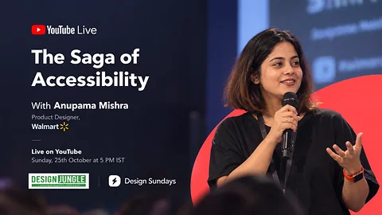
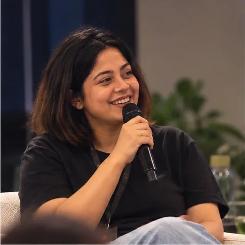
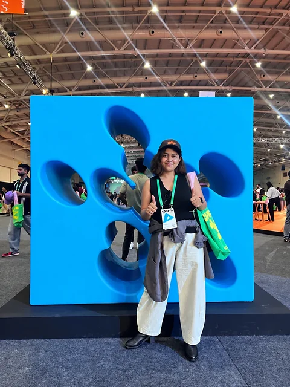
Talks. The Saga of Accessibility, on Design Sundays
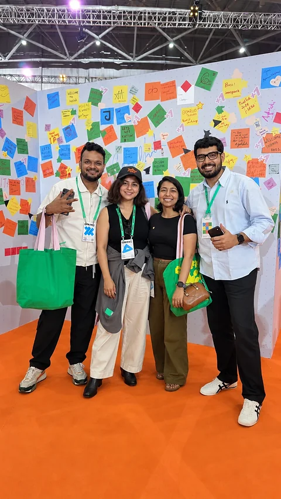
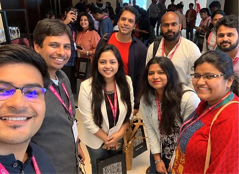
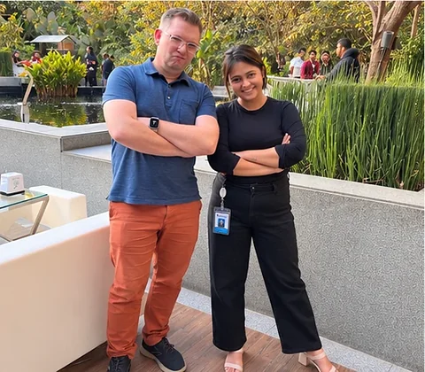
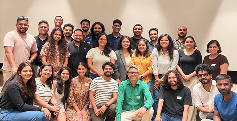
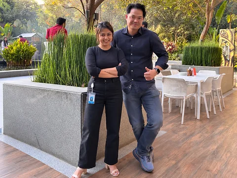
People. Design meetups, and the people I work with
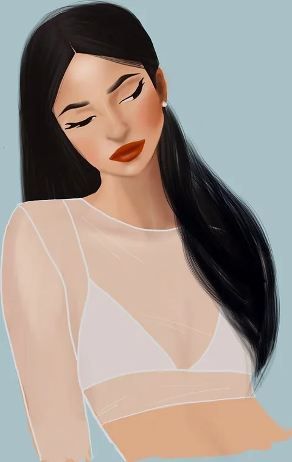
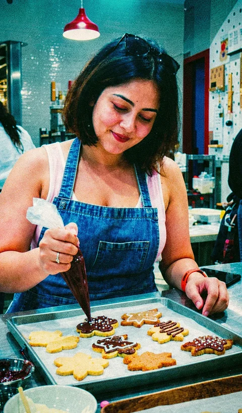
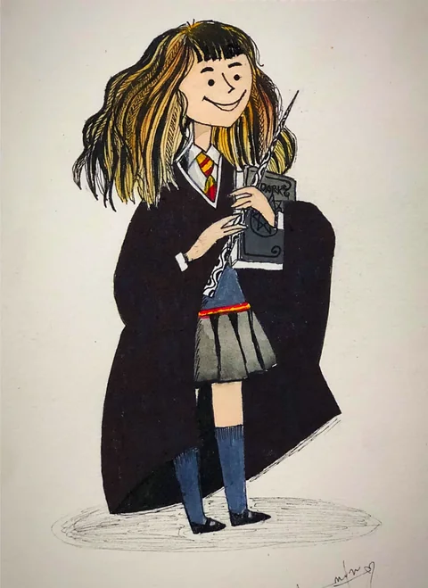
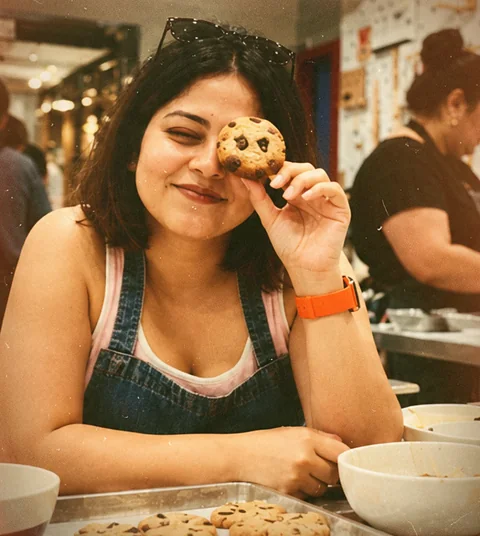
Making. Painting, baking, and the occasional poem
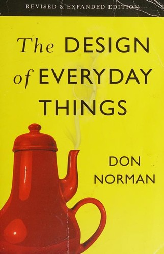
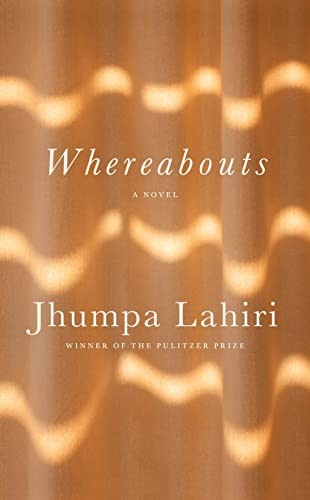
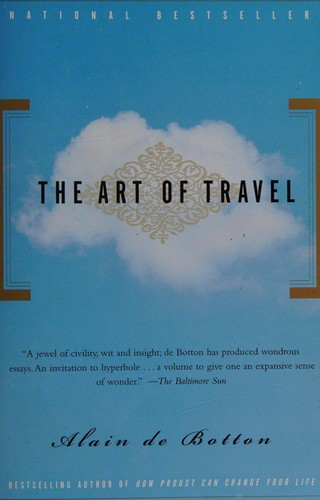
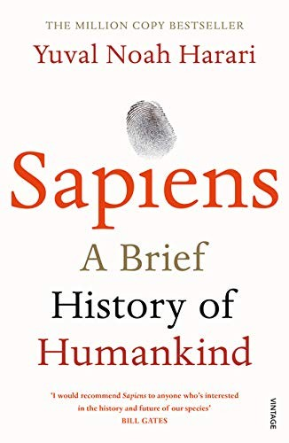
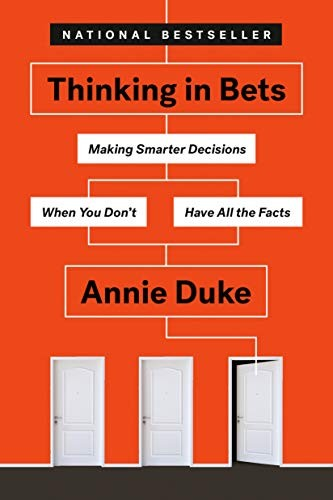
Books. Some of the ten on my shelf
Bento, portrait 2×2
The portrait takes four squares on the left; the four groups fill a 2×2 on the right. The portrait is exactly four times any other tile, so its weight is obvious at a glance.
Tall portrait
A portrait-shaped tile, two rows tall, next to a 2×2. Closer to how a photo of a person is framed; less width given to you than A, more height.
Portrait in the centre
You in the middle, two groups on each side, like a family wall. Symmetric and calm; the groups read as orbiting you.
Banner, then four across
A wide portrait band the full width of the page, then the four groups in one row. The most "cover photo" of the five; the portrait needs a wide crop.
Ladder, people beside you
Portrait 2×2 with the People tile standing tall beside it, then talks, making and books in a row of three. Puts the people you work with next to you.